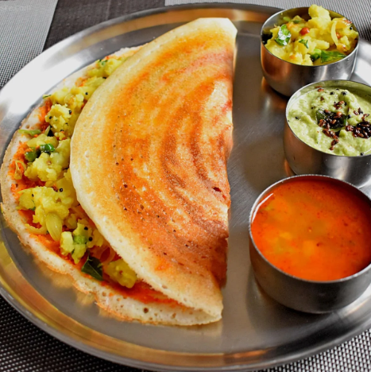

Masala Dosa
Masala Dosa is a famous South Indian delicacy made from a crispy,
golden rice and lentil crepe filled with a flavorful potato masala.
It is traditionally served with coconut chutney and hot sambar,
making it a wholesome and satisfying meal.
Ingredients
- 2 cups dosa batter
- 3 medium potatoes, boiled and mashed
- 1 onion, thinly sliced
- 2 green chilies, chopped
- 1 tsp mustard seeds
- 1 tsp urad dal
- 8–10 curry leaves
- ½ tsp turmeric powder
- 2 tbsp oil or ghee
- Salt to taste
- Fresh coriander leaves, chopped
- Coconut chutney and sambar for serving
Instructions
- Heat 1 tablespoon oil in a pan.
- Add mustard seeds, urad dal, curry leaves, and green chilies.
- Add sliced onions and sauté until soft.
- Mix in turmeric powder, salt, and mashed potatoes.
- Cook for 3–4 minutes and garnish with coriander leaves.
- Heat a dosa tawa and spread a ladle of dosa batter into a thin circle.
- Drizzle oil around the edges and cook until golden and crisp.
- Place the potato masala in the center.
- Fold the dosa in half and remove from the tawa.
- Serve hot with coconut chutney and sambar.
Cooking Time
Preparation: 20 minutes
Cooking: 20 minutes
Total Time: 40 minutes
Serving Suggestion
Enjoy hot Masala Dosa with coconut chutney, tomato chutney,
peanut chutney, and steaming hot sambar for an authentic
South Indian breakfast or dinner.
← Back to Home